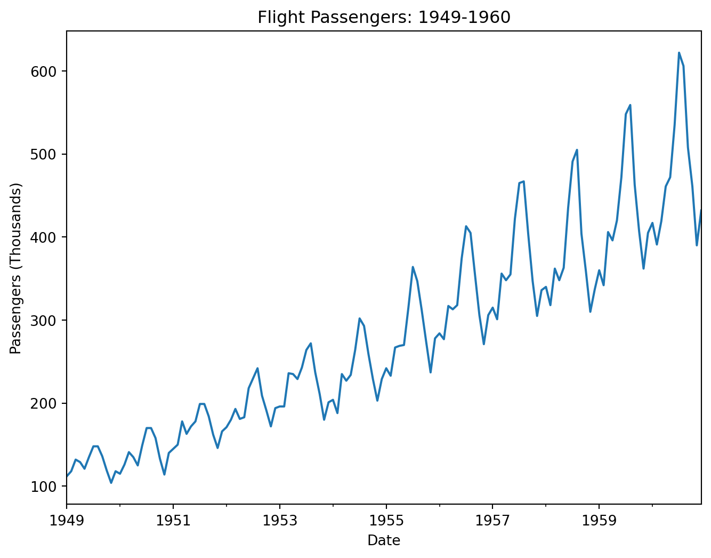
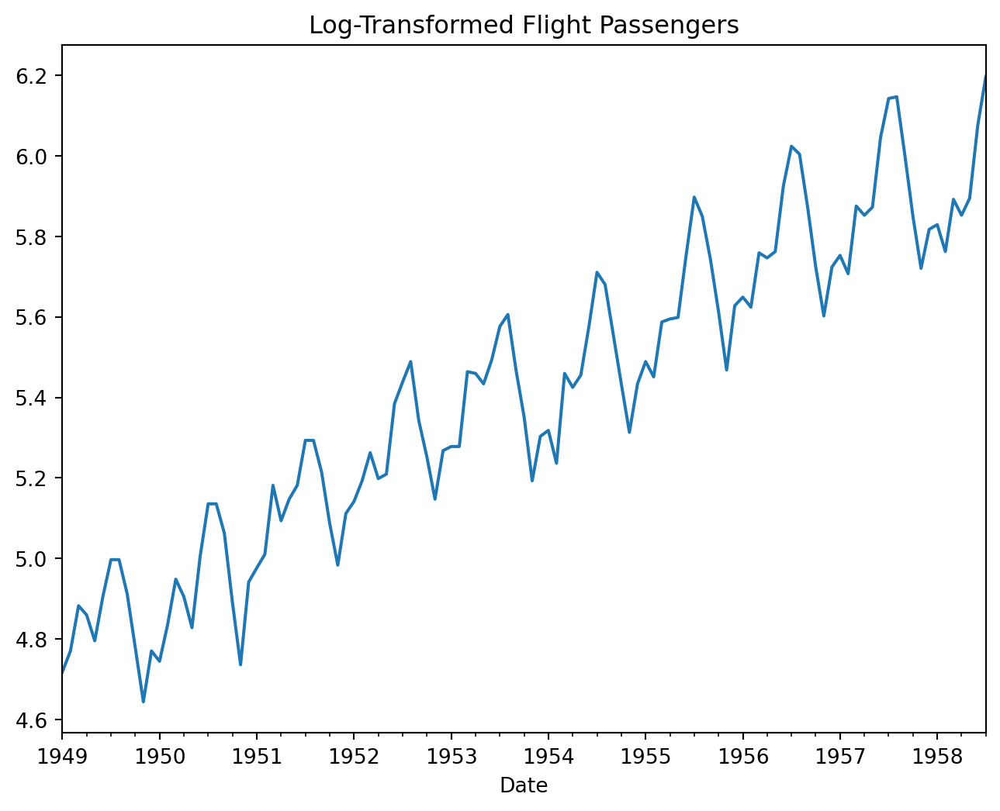
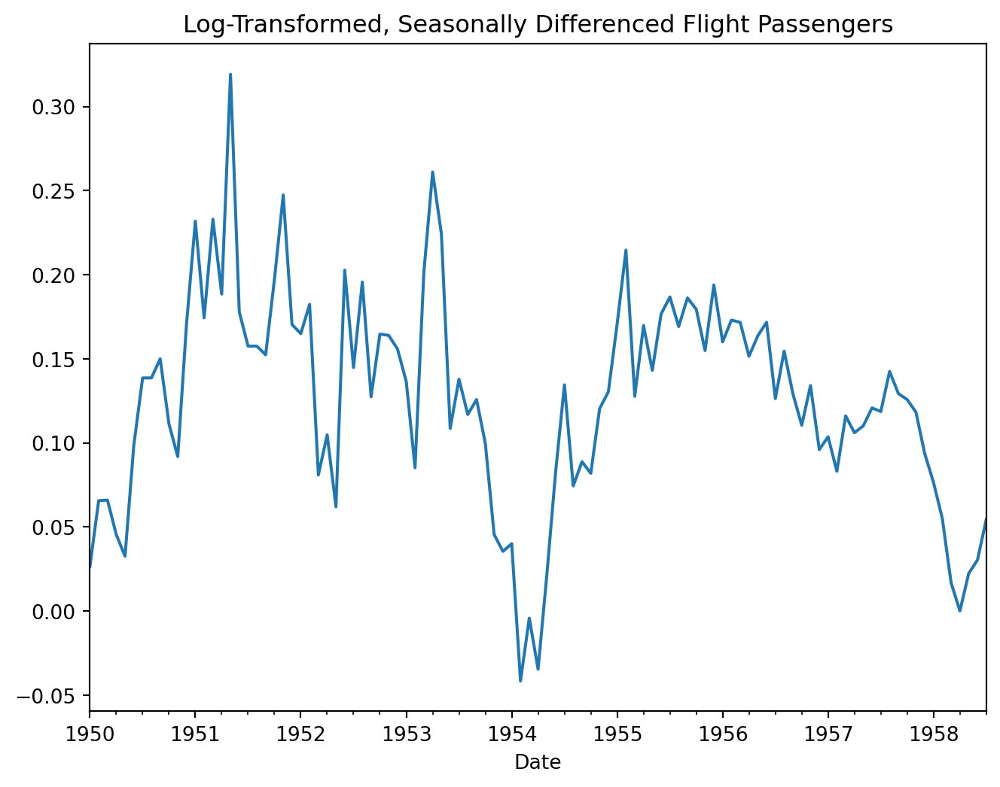
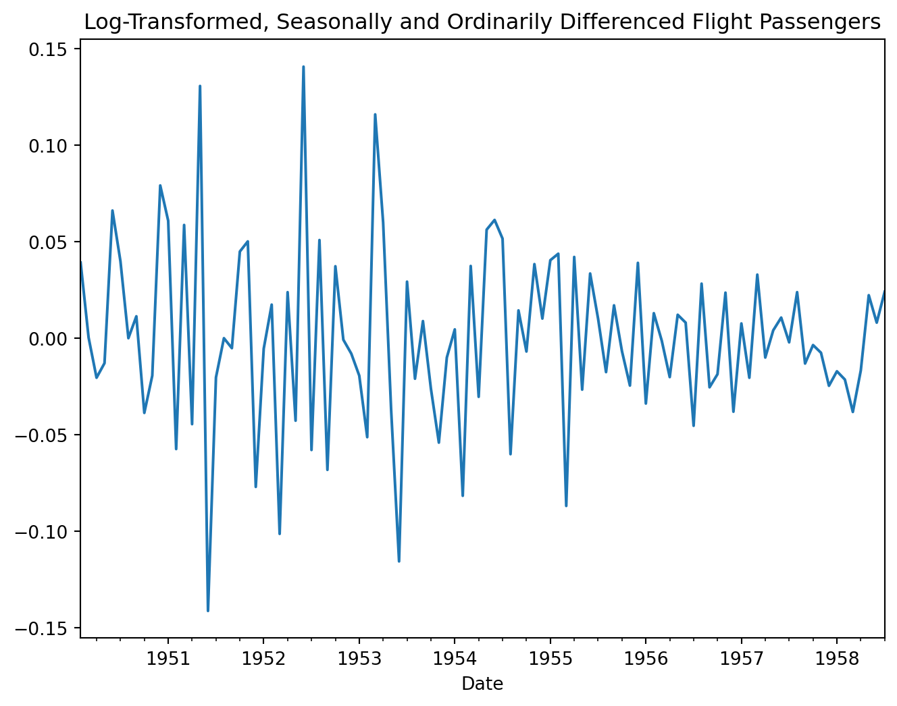
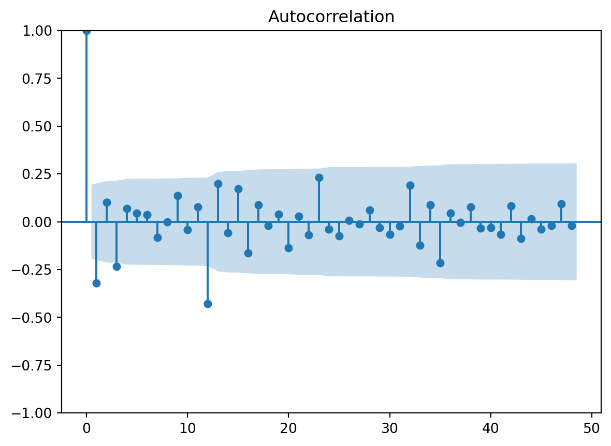
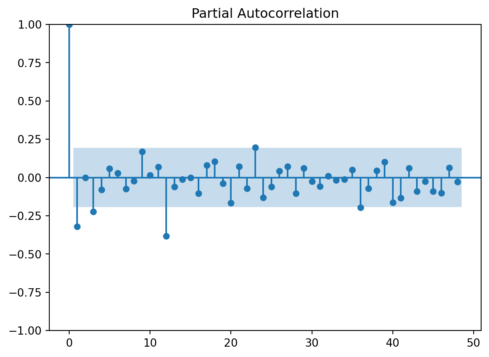
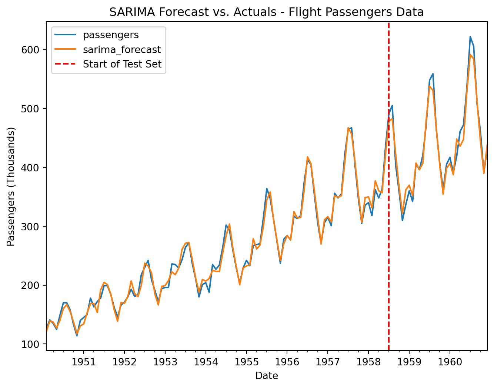

# Necessary imports
import numpy as np
import pandas as pd
import matplotlib.pyplot as plt
import seaborn as sns
# Load the flights data into a DataFrame
flights = sns.load_dataset("flights")Seasonal ARIMA: The Basics
ARIMA
Basics
Time Series Modeling
Forecasting
A Simple Walkthrough of Forecasting with SARIMA
Introduction
As discussed in a previous post, one of the major limitations of an ARIMA model, in its most basic form, is that it does not account for seasonal patterns in a time series.
As a reminder, seasonality refers to patterns in a time series that repeat at a consistent frequency.
We all recognize seasonality in our daily lives. Rush-hour traffic is a familiar example. Any city dweller knows that weekday traffic between 7:00 a.m. and 8:00 a.m. and between 5:00 p.m. and 6:00 p.m. is often at its peak, while traffic at other times is lighter. This repetitive, consistent pattern helps us understand traffic behavior. Time series with seasonal fluctuations may require models that can account for these patterns.
SARIMA (Seasonal ARIMA) is one of the best-known and widely used models for forecasting time series that exhibit seasonality. In this article, we will walk through the basics of building and using a SARIMA model in Python.
Throughout our coding, we will use the flights dataset from the seaborn package. I encourage you to open a notebook and follow along. As you will see, SARIMA models are relatively straightforward to set up and can be effective for forecasting seasonal time series. Let’s get started.
Importing Packages and Loading Our Data
We will first import the packages we need, then load the flights dataset from seaborn. This classic time series dataset contains monthly passenger totals (in thousands) for U.S. flights from 1949 through 1960. It has strong yearly seasonality and a consistent upward trend.
For more information about this dataset, check out this link.
Next, we need to create a datetime index. The exact method may differ depending on the frequency and layout of your data, but creating a datetime index is an important step when preparing time series data for modeling.
# Convert the 'year' and 'month' columns into a single datetime column,
# then set that column as the index.
flights['date'] = pd.to_datetime(
flights['year'].astype(str) + '-' + flights['month'].astype(str),
format='%Y-%b'
)
flights = flights.set_index('date')
# Explicitly set monthly frequency
flights.index = pd.DatetimeIndex(flights.index, freq='MS')
# Separate the target variable into a Series.
# The index now contains the year and month information.
y = flights['passengers']Explore the Data
Now that our data is loaded, let’s take a moment to explore it visually. In a real-world project, you would investigate the data in much greater depth. For this example, we will use a simple line plot to visualize its trend and seasonal structure.
# Use the Series .plot() method to create a quick line graph.
y.plot(figsize=(8, 6))
plt.title('Flight Passengers: 1949-1960')
plt.ylabel('Passengers (Thousands)')
plt.xlabel('Date')
plt.show()
This simple line graph immediately reveals some clear and important features of the time series:
- A noticeable upward trend.
- Recurring seasonal fluctuations that appear to become larger as the underlying data increases.
- A nonstationary pattern: both the mean and the variance appear to change over time.
Split the Data
Before going any further, let’s divide our time series into training and test sets. This sets aside part of the data so we can evaluate the model on observations it has not seen during fitting. It gives us an indication of how the model might perform on future data.
With time series data, you generally do not want to shuffle the observations as you might with cross-sectional data. The reason is simple: with time series, order matters. We need to train on the earlier observations and test on the later ones to preserve the chronological order.
from sklearn.model_selection import train_test_split
y_train, y_test = train_test_split(
y, shuffle=False, train_size=0.8
)
# Check the sizes of the training and test sets.
print('Train Set Size:', len(y_train), 'rows')
print('Test Set Size:', len(y_test), 'rows')Train Set Size: 115 rows
Test Set Size: 29 rowsDealing with Multiplicative Seasonality
The flights dataset demonstrates what is called multiplicative seasonality, rather than additive seasonality. This means that the size of the seasonal fluctuations—the peaks and valleys in our line graph—becomes more pronounced as the underlying data increases.
A standard SARIMA model describes additive relationships on the scale of the data being modeled. To better accommodate multiplicative seasonality, we can first apply a logarithmic transformation. This helps stabilize the seasonal fluctuations, making them more consistent in size as the underlying data increases.
For more information about additive versus multiplicative seasonality, take a look here.
Taking the log of our data is easy using NumPy’s np.log() function.
y_train_log = np.log(y_train)Plotting our transformed training data will help us see how the log transformation changes the seasonal pattern.
y_train_log.plot(figsize=(8, 6))
plt.title('Log-Transformed Flight Passengers')
plt.xlabel('Date')
plt.show()
The seasonal fluctuations are still present, but they are now more consistent in size rather than increasing along with the underlying data. In other words, the log transformation makes the seasonal pattern look more additive.
Dealing with Nonstationarity
Now that we have addressed the changing size of the seasonal fluctuations, we can turn to determining our ARIMA orders, starting with d and D, the differencing orders. What will it take to make our data stationary?
As a reminder, a stationary time series has statistical properties—particularly its mean and variance—that remain relatively stable over time. For more information about stationarity and how to assess it, check out this article.
For our purposes, we can see that the increasing trend and seasonal fluctuations mean the flights data is not stationary. ARIMA models are designed to model stationary behavior after any necessary differencing has been applied. The model performs the differencing, but we need to determine which differencing orders to use.
Stationarity can sometimes be achieved through the process of differencing. With ordinary differencing, we calculate the change from one observation to the next. With seasonal data, we may also need to apply seasonal differencing, which calculates the change between observations one full seasonal cycle apart.
In this case, our seasonal cycle is 12 months. Seasonal differencing therefore compares January 1949 with January 1950, February 1949 with February 1950, and so on. Seasonal differencing may be enough, by itself, to make a time series stationary. If it is not, we can follow it with ordinary differencing.
When working with seasonal data, it is often useful to try seasonal differencing first. This helps remove recurring seasonal patterns before determining whether additional nonseasonal differencing is necessary.
Let’s see whether seasonal differencing is enough to make our flights time series stationary.
# Apply seasonal differencing at lag 12 because the seasonal period
# is one year, or 12 months.
y_train_log_diff = y_train_log.diff(12).dropna()
# Drop the missing values created by differencing.
y_train_log_diff.plot(figsize=(8, 6))
plt.title('Log-Transformed, Seasonally Differenced Flight Passengers')
plt.xlabel('Date')
plt.show()
After the log transformation and seasonal differencing, the data may be harder to interpret in terms of actual passenger counts. What matters here is the structure of the resulting series. Does it appear stationary?
The mean and variance do not appear to be fully consistent over time, so seasonal differencing may not have been sufficient. We can use the Augmented Dickey-Fuller (ADF) test to investigate further.
from statsmodels.tsa.stattools import adfuller
adfuller_results = adfuller(y_train_log_diff)
print('ADF p-value:', round(adfuller_results[1], 4))ADF p-value: 0.2905Our p-value of 0.2905 is well above the commonly used significance level of 0.05. The ADF test’s null hypothesis is that the series has a unit root. Therefore, we fail to reject the null hypothesis, which suggests that seasonal differencing alone has not been sufficient to remove the unit root. Let’s try ordinary differencing as well.
# Apply ordinary differencing at lag 1.
y_train_log_diff = y_train_log_diff.diff(1).dropna()
y_train_log_diff.plot(figsize=(8, 6))
plt.title('Log-Transformed, Seasonally and Ordinarily Differenced Flight Passengers')
plt.xlabel('Date')
plt.show()
adfuller_results_diff = adfuller(y_train_log_diff)
print('ADF p-value:', round(adfuller_results_diff[1], 4))
ADF p-value: 0.0017Our plot looks more promising, although we may still want to investigate the decreasing variance over time. The ADF p-value of 0.0051 is now well below the commonly used significance level of 0.05. This provides evidence against the presence of a unit root, suggesting that we have made substantial progress toward stationarity.
Keep in mind that the ADF test evaluates evidence for a unit root; it does not establish stationarity in every respect or test whether the variance is constant. We should therefore consider the plot and other diagnostics as well.
In the process, we have identified the d and D orders of our ARIMA model:
d = 1: Apply ordinary differencing once.D = 1: Apply seasonal differencing once.
Finding the AR and MA Orders
Next, we need to determine our AR (autoregressive) and MA (moving average) orders, both at the nonseasonal level and at the seasonal level. To do this, we will turn to ACF and PACF plots.
These visualizations help us identify the remaining correlation structure in our differenced data. In other words, they help us examine how observations relate to previous observations in the series. For a full explanation of ACF and PACF plots and how to interpret them, check out this article.
from statsmodels.graphics.tsaplots import plot_acf, plot_pacf
# Set lags to 48 so we can inspect several seasonal periods.
plot_acf(y_train_log_diff, lags=48) # Helps inform the q (MA) order
plot_pacf(y_train_log_diff, lags=48) # Helps inform the p (AR) order
plt.show()

To interpret these plots, we need to think at two levels: the nonseasonal ARIMA level and the seasonal level.
Nonseasonal ARIMA level: We will look at the early lags, especially lags 1–3. Both the ACF and PACF plots show a significant spike at lag 1. Traditionally, we look to the PACF to help identify the AR order (p) and the ACF to help identify the MA order (q). Based on these plots, we will start by testing p = 1 and q = 1. We will set aside the potentially significant spike at lag 3 for now and revisit the model if diagnostics suggest that additional structure remains.
Seasonal level: Next, we focus on the seasonal lags (12, 24, 36, 48, and so on). Both plots show a significant spike at lag 12, while the higher seasonal lags do not appear significant. Traditionally, the PACF helps inform the seasonal AR order (P), while the ACF helps inform the seasonal MA order (Q). Based on these plots, we will start by testing P = 1 and Q = 1.
These ACF/PACF patterns are useful guidelines, not definitive rules. They help us identify promising candidate orders, but we still need to compare models and check their residuals and forecasting performance.
Building Our Model (First Attempt)
Let’s build our first model. Combining what we learned from the differencing and ACF/PACF plots, we have:
Nonseasonal ARIMA orders:
p: 1d: 1q: 1
Seasonal orders:
P: 1D: 1Q: 1m: 12
The general SARIMA notation is:
[ SARIMA(p,d,q)(P,D,Q)_m ]
Here, m represents the number of observations in one seasonal cycle. Because our data is monthly and the seasonal cycle is one year, m = 12.
As a reminder, we fit the model using the log-transformed but non-differenced training data. The ARIMA model handles the differencing for us!
from statsmodels.tsa.arima.model import ARIMA
# Increase the maximum number of iterations available to the optimizer.
seasonal_arima_mod = ARIMA(
y_train_log,
order=(1, 1, 1),
seasonal_order=(1, 1, 1, 12)
).fit(method_kwargs={"maxiter": 200})# Review the model summary.
print(seasonal_arima_mod.summary()) SARIMAX Results
========================================================================================
Dep. Variable: passengers No. Observations: 115
Model: ARIMA(1, 1, 1)x(1, 1, 1, 12) Log Likelihood 189.368
Date: Sat, 21 Nov 2026 AIC -368.737
Time: 12:19:09 BIC -355.612
Sample: 01-01-1949 HQIC -363.422
- 07-01-1958
Covariance Type: opg
==============================================================================
coef std err z P>|z| [0.025 0.975]
------------------------------------------------------------------------------
ar.L1 0.2377 0.277 0.858 0.391 -0.305 0.781
ma.L1 -0.5580 0.249 -2.244 0.025 -1.045 -0.071
ar.S.L12 -0.0807 0.232 -0.347 0.728 -0.536 0.375
ma.S.L12 -0.5164 0.252 -2.047 0.041 -1.011 -0.022
sigma2 0.0014 0.000 7.008 0.000 0.001 0.002
===================================================================================
Ljung-Box (L1) (Q): 0.03 Jarque-Bera (JB): 2.33
Prob(Q): 0.87 Prob(JB): 0.31
Heteroskedasticity (H): 0.27 Skew: 0.07
Prob(H) (two-sided): 0.00 Kurtosis: 3.73
===================================================================================
Warnings:
[1] Covariance matrix calculated using the outer product of gradients (complex-step).Our first model was based on the candidate orders suggested by the ACF and PACF plots. However, the summary shows some potential problems. Most noticeably, the coefficient p-values in the P>|z| column are relatively high for the AR terms. This suggests that these coefficients may not be statistically significant. We will try building the model again, this time removing the AR terms.
seasonal_arima_mod_revised = ARIMA(
y_train_log,
order=(0, 1, 1),
seasonal_order=(0, 1, 1, 12)
).fit(method_kwargs={"maxiter": 200})print(seasonal_arima_mod_revised.summary()) SARIMAX Results
========================================================================================
Dep. Variable: passengers No. Observations: 115
Model: ARIMA(0, 1, 1)x(0, 1, 1, 12) Log Likelihood 189.086
Date: Sat, 21 Nov 2026 AIC -372.171
Time: 12:19:10 BIC -364.296
Sample: 01-01-1949 HQIC -368.982
- 07-01-1958
Covariance Type: opg
==============================================================================
coef std err z P>|z| [0.025 0.975]
------------------------------------------------------------------------------
ma.L1 -0.3273 0.090 -3.618 0.000 -0.505 -0.150
ma.S.L12 -0.5677 0.106 -5.335 0.000 -0.776 -0.359
sigma2 0.0014 0.000 7.758 0.000 0.001 0.002
===================================================================================
Ljung-Box (L1) (Q): 0.01 Jarque-Bera (JB): 1.12
Prob(Q): 0.91 Prob(JB): 0.57
Heteroskedasticity (H): 0.26 Skew: 0.11
Prob(H) (two-sided): 0.00 Kurtosis: 3.46
===================================================================================
Warnings:
[1] Covariance matrix calculated using the outer product of gradients (complex-step).Our coefficient p-values are now approximately 0.00, which is encouraging. The AIC and BIC values have also decreased slightly compared with the first model. Lower AIC and BIC values generally indicate a better balance between model fit and complexity when comparing models fitted to the same data.
However, coefficient significance alone does not determine whether a forecasting model is good. In a real-world setting, you would want to train several candidate SARIMA models and compare criteria such as AIC and BIC, inspect their residuals, and evaluate their out-of-sample performance using time-series cross-validation where appropriate. For now, let’s see how our revised model performs against the actual values in the test set.
Assessing Model Performance
We will obtain the fitted values for the training period and the forecast values for the test period, then combine them for easier visualization.
Fitted values are the model’s estimates over the training period. Forecasts are predictions for observations outside the training period. Comparing both with the actual values helps us understand how well the model fits historical data and how well it generalizes to unseen data.
# Generate fitted values for the training period and forecasts for the test period.
# np.exp() reverses the logarithmic transformation.
sarima_fitted_values = np.exp(
seasonal_arima_mod_revised.predict(
start=y_train.index[0],
end=y_train.index[-1]
)
)
sarima_forecast_values = np.exp(
seasonal_arima_mod_revised.predict(
start=y_test.index[0],
end=y_test.index[-1]
)
)
# Combine actual and fitted training values.
combined_sarima_train = (
pd.concat([y_train, sarima_fitted_values], axis=1)
.rename(columns={'predicted_mean': 'sarima_forecast'})
.iloc[13:]
)
# Exclude the earliest fitted values, which are affected by the
# model's initialization and differencing requirements.
combined_sarima_test = (
pd.concat([y_test, sarima_forecast_values], axis=1)
.rename(columns={'predicted_mean': 'sarima_forecast'})
)
combined_sarima_train_test = pd.concat(
[combined_sarima_train, combined_sarima_test],
axis=0
)
combined_sarima_train_test.plot(figsize=(8, 6))
plt.axvline(
x=y_train.index[-1],
color='red',
linestyle='--',
label='Start of Test Set'
)
plt.title('SARIMA Forecast vs. Actuals - Flight Passengers Data')
plt.ylabel('Passengers (Thousands)')
plt.xlabel('Date')
plt.legend()
plt.show()
From a visual standpoint, we have reason to be optimistic. Our SARIMA model appears to do a decent job of capturing the seasonal fluctuations and, at least partially, the underlying trend. This is encouraging, particularly given its performance on the test set.
One important detail: because we modeled the logarithm of passenger counts, exponentiating the predictions does not necessarily produce an unbiased estimate of the expected passenger count. A simple inverse transformation is appropriate for this introductory example, but more advanced applications may require a bias correction.
Let’s also check MAE and RMSE, two common metrics for evaluating forecasting errors.
# Import the necessary metric functions from scikit-learn.
from sklearn.metrics import mean_absolute_error, mean_squared_error
mae = mean_absolute_error(y_test, sarima_forecast_values)
rmse = np.sqrt(mean_squared_error(y_test, sarima_forecast_values))
print('MAE:', np.round(mae, 4))
print('RMSE:', np.round(rmse, 4))MAE: 12.6036
RMSE: 15.6789MAE (Mean Absolute Error) gives us the average absolute difference between our forecasts and the actual values. RMSE (Root Mean Squared Error) also measures forecast error, but it penalizes larger errors more heavily because the errors are squared before being averaged.
One final step in a more complete modeling workflow would be to examine the model residuals. Residuals are the differences between the observed values and the model’s fitted values. Ideally, they should have a mean close to zero and show little or no remaining autocorrelation. If substantial patterns remain in the residuals, the model may not have captured all the structure in the data.
Conclusion
In this walkthrough, we used a log transformation to make the seasonal fluctuations more consistent, applied seasonal and ordinary differencing to address nonstationarity, and used ACF and PACF plots to identify candidate AR and MA orders. We then fitted a SARIMA model and evaluated its forecasts using both a visual comparison and error metrics.
The key takeaway is that building a SARIMA model is an iterative process. The ACF and PACF plots help us identify candidate orders, but model selection should also consider information criteria, residual diagnostics, and performance on data that was not used to fit the model.
This example provides a starting point for working with seasonal time series. In practice, you may need to test several candidate models and revisit earlier steps before settling on a model that forecasts well.